12. [TD]：使用 [Spring Data] 实现 TD 的 [DAO] 层
关键词：多层架构、Spring、依赖注入、JPA（Java Persistence API）、Spring Data。
我们将采用与之前相同的方法来实现 TD 的 [DAO] 层。
12.1. 支持
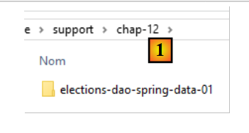 |
- 在[1]中，[support / chap-12]文件夹包含本章的Eclipse项目；
12.2. Eclipse 项目
Eclipse 项目结构如下：
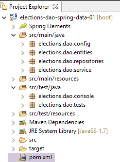 |
- [elections.dao.config]：包含 Spring 项目的配置类；
- [elections.dao.entities]：包含 JPA 实体以及项目的异常类；
- [elections.dao.repositories]：包含针对 [CONF] 和 [LISTES] 表的 [CrudRepository] 接口；
- [elections.dao.service]：包含 [DAO] 层的实现。这是我们需要编写的部分；
- [elections.dao.console]：包含一个 [console] 测试类；
- [pom.xml]：Maven 项目配置文件；
该项目采用以下架构：
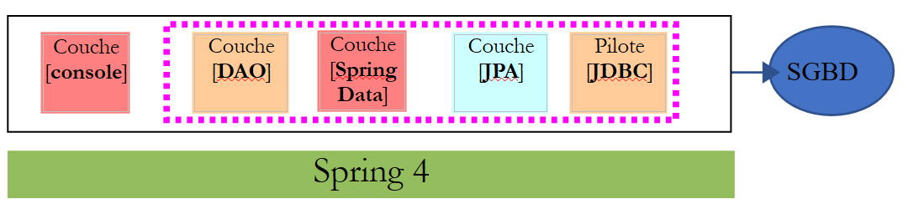 |
[DAO] 层仅与 [Spring Data] 实现的层进行交互。
12.3. Maven 配置
任务：构建项目的 [pom.xml] 文件。
12.4. [JPA] 层的实体
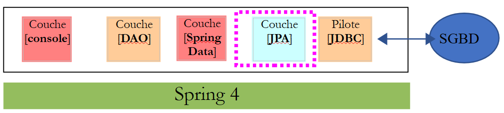 |
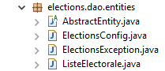 |
- [ElectionsConfig] 是与 [CONF] 表中某一行关联的对象模型；
- [VoterList] 是与 [LISTS] 表中某一行关联的对象模型；
- [AbstractEntity] 是前两个类的父类。它将两个类共有的 [id, version] 字段提取出来；
- [ElectionsException] 是该项目的异常类；
12.4.1. [ElectionsException] 类
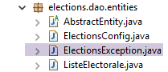 |
[ElectionsException] 类是第 4.3 节中描述的未处理异常。
12.4.2. [AbstractEntity] 类
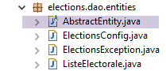 |
[AbstractEntity] 类的定义如下：
package elections.dao.entities;
import java.io.Serializable;
import javax.persistence.Column;
import javax.persistence.GeneratedValue;
import javax.persistence.GenerationType;
import javax.persistence.Id;
import javax.persistence.MappedSuperclass;
import javax.persistence.Version;
import com.fasterxml.jackson.core.JsonProcessingException;
import com.fasterxml.jackson.databind.ObjectMapper;
@MappedSuperclass
public abstract class AbstractEntity implements Serializable{
private static final long serialVersionUID = 1L;
// properties
@Id
@GeneratedValue(strategy = GenerationType.IDENTITY)
@Column(name = "ID")
protected Long id;
@Version
@Column(name = "VERSION")
protected Long version;
// manufacturers
public AbstractEntity() {
}
public AbstractEntity(Long id, Long version) {
this.id = id;
this.version = version;
}
// redefine [equals] and [hashcode]
@Override
public int hashCode() {
return (id != null ? id.hashCode() : 0);
}
@Override
public boolean equals(Object entity) {
if (!(entity instanceof AbstractEntity)) {
return false;
}
String class1 = this.getClass().getName();
String class2 = entity.getClass().getName();
if (!class2.equals(class1)) {
return false;
}
AbstractEntity other = (AbstractEntity) entity;
return id != null && this.id == other.id;
}
// signature jSON
public String toString() {
ObjectMapper mapper = new ObjectMapper();
try {
return mapper.writeValueAsString(this);
} catch (JsonProcessingException e) {
e.printStackTrace();
return null;
}
}
// getters and setters
...
}
这是第11.3.5.2节中描述的类，不包含JSON过滤器。在此，[CONF]和[LISTES]表之间不存在外键关系。然而，正是这种关系在[延迟加载]模式下的存在，才使得JSON过滤器成为必要。
12.4.3. [ElectionsConfig] 类
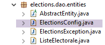 |
[ElectionsConfig] 类是与 [CONF] 表关联的 JPA 实体；
任务：实现 [ElectionsConfig] 类。
12.4.4. [VoterList] 类
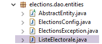 |
[VoterList] 类是与 [LISTS] 表关联的 JPA 实体；
任务：实现 [VoterList] 类。
12.5. [Spring Data] 层
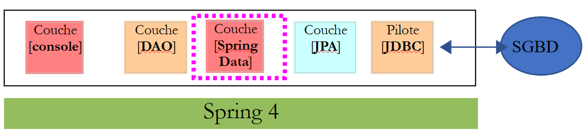 |
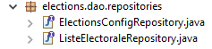 |
任务：编写两个 [Spring Data] 接口，用于管理 [CONF] 和 [LISTES] 这两张表；
12.6. [DAO] 层
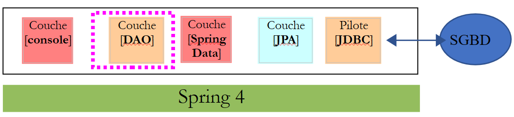 |
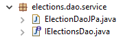 |
[DAO] 层的 [IElectionsDao] 接口如下：
package dao.service;
import dao.entities.ElectionsConfig;
import dao.entities.ListeElectorale;
public interface IElectionsDao {
// election configuration
public ElectionsConfig getElectionsConfig();
// candidate lists
public ListeElectorale[] getListesElectorales();
// updating candidate lists
public void setListesElectorales(ListeElectorale[] listesElectorales);
}
任务：编写 [IElectionsDao] 接口的 [ElectionsDaoJpa] 实现。
12.7. Spring 项目配置
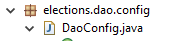 |
[DaoConfig] 类用于配置 Spring 项目。
任务：编写 [DaoConfig] 类
12.8. [console] 层
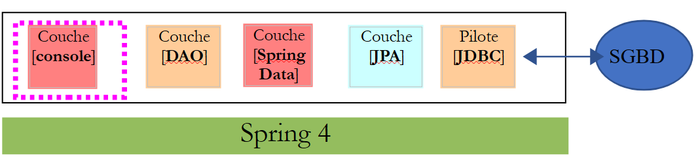 |
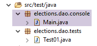 |
[Main] 类是以下可执行类：
package dao.console;
import org.springframework.context.annotation.AnnotationConfigApplicationContext;
import dao.config.AppConfig;
import dao.entities.ElectionsConfig;
import dao.entities.ListeElectorale;
import dao.service.IElectionsDao;
public class Main {
// data source
private static IElectionsDao dao;
public static void main(String[] args) {
// spring context retrieval
AnnotationConfigApplicationContext ctx = new AnnotationConfigApplicationContext(AppConfig.class);
// data source recovery
dao = ctx.getBean(IElectionsDao.class);
// contents of both tables
ElectionsConfig electionsConfig = dao.getElectionsConfig();
ListeElectorale[] listes = dao.getListesElectorales();
// display
System.out.println(String.format("Nombre de sièges à pourvoir : %d", electionsConfig.getNbSiegesAPourvoir()));
System.out.println(String.format("Seuil électoral : %5.2f", electionsConfig.getSeuilElectoral()));
System.out.println("Listes candidates----------------");
for (ListeElectorale liste : listes) {
System.out.println(liste);
}
// closing Spring context
ctx.close();
}
}
[Test01] 类是一个 JUnit 测试：
package dao.tests;
import org.junit.Assert;
import org.junit.Before;
import org.junit.Test;
import org.junit.runner.RunWith;
import org.springframework.beans.factory.annotation.Autowired;
import org.springframework.boot.test.SpringApplicationConfiguration;
import org.springframework.test.context.junit4.SpringJUnit4ClassRunner;
import dao.config.AppConfig;
import dao.entities.ElectionsConfig;
import dao.entities.ListeElectorale;
import dao.service.IElectionsDao;
@SpringApplicationConfiguration(classes = AppConfig.class)
@RunWith(SpringJUnit4ClassRunner.class)
public class Test01 {
// layer [DAO]
@Autowired
private IElectionsDao electionsDao;
@Before
public void init() {
// the table is cleaned [LISTES]
// competing lists
ListeElectorale[] listes = electionsDao.getListesElectorales();
// set votes and seats to 0 and eliminate false
int voix = 0;
int sièges = 0;
boolean elimine = false;
for (ListeElectorale liste : listes) {
liste.setVoix(voix);
liste.setSieges(sièges);
liste.setElimine(elimine);
}
// we make this data persistent using the [dao] layer
electionsDao.setListesElectorales(listes);
}
@Test
public void testElections01() {
System.out.println("testElections01-------------------------------------");
// election configuration recovery
ElectionsConfig electionsConfig = electionsDao.getElectionsConfig();
int nbSiegesAPourvoir = electionsConfig.getNbSiegesAPourvoir();
double seuilElectoral = electionsConfig.getSeuilElectoral();
Assert.assertEquals(6, nbSiegesAPourvoir);
Assert.assertEquals(0.05, seuilElectoral, 1E-6);
// competing lists
ListeElectorale[] listes = electionsDao.getListesElectorales();
// display read values
System.out.println("Nombre de sièges à pourvoir : " + nbSiegesAPourvoir);
System.out.println("Seuil électoral : " + seuilElectoral);
System.out.println("Listes en compétition ---------------------");
for (int i = 0; i < listes.length; i++) {
System.out.println(listes[i]);
}
// votes and seats are allocated to lists
int voix = 0;
int sièges = 0;
boolean elimine = false;
for (ListeElectorale liste : listes) {
liste.setVoix(voix);
liste.setSieges(sièges);
liste.setElimine(elimine);
voix += 10;
sièges += 1;
elimine = !elimine;
}
// we make this data persistent using the [dao] layer
electionsDao.setListesElectorales(listes);
// data re-reading
ListeElectorale[] listesElectorales2 = electionsDao.getListesElectorales();
// check data read
Assert.assertEquals(7, listesElectorales2.length);
voix = 0;
sièges = 0;
elimine = false;
for (ListeElectorale liste : listes) {
Assert.assertEquals(voix, liste.getVoix());
Assert.assertEquals(sièges, liste.getSieges());
Assert.assertEquals(elimine, liste.isElimine());
voix += 10;
sièges += 1;
elimine = !elimine;
}
System.out.println("Listes en compétition ---------------------");
for (int i = 0; i < listes.length; i++) {
System.out.println(listes[i]);
}
}
}
任务：在您的 [DAO] 层上运行 [控制台] 和 [JUnit] 测试。
12.9. 生成项目的 Maven 归档文件
按照第11.3.12节中的示例，生成项目的Maven归档文件。